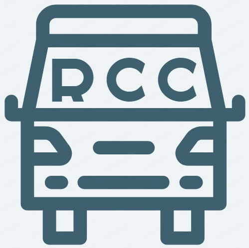

<mat-toolbar color="primary" class="mat-toolbar">
  <button mat-icon-button class="menu" (click)="onClick()">
    <mat-icon>menu</mat-icon>
  </button>
  <div class="rcc">
    
    <span>Reconocida<br>Compañía de<br>Colectivos</span>
  </div>
</mat-toolbar>

